Look away.
Your screen blurs.
Your AirPods already know where your head is pointing. PrivacyPods blurs your Mac the moment you turn away, and clears it the moment you look back.
Your AirPods already know where your head is pointing. PrivacyPods blurs your Mac the moment you turn away, and clears it the moment you look back.
Blur after 5 seconds and lock after 30, or lock straight away. Every lock is checked, and a lock that fails is never hidden from you.
One eye in the menu bar tells you at a glance.

Your screen is blurred Can't see you yet Paused, by you Needs your attentionOn first launch PrivacyPods tells you the one thing to do next, and asks only for what gets head tracking going.

Which display you're looking at, whether you're at the Mac, and whether the screen lock works. Every problem comes with its fix.
| Name | Role | Current | Proposed |
|---|---|---|---|
| Avery Lin | Staff Engineer | $212,000 | $226,000 |
| Jordan Pike | Design Lead | $184,500 | $193,000 |
| Sam Okafor | Product Manager | $171,000 | $180,500 |
| Riley Chen | Engineer II | $142,000 | $151,000 |
| Morgan Ruiz | Support Lead | $98,000 | $104,500 |